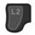

Controles
Saltar para a navegação
Saltar para a pesquisa
| Guia de Introdução |
O jogador | Opções | Controles | Controles móveis |
Saúde | Energia | Habilidades | Ciclo do dia |
Todas as teclas de atalho podem ser redefinidas ao abrir o menu e escolher a aba Opções 
Teclado & Mouse
| Tecla | Descrição |
|---|---|
| W A S D |
W Mover-se para cima A Mover-se à esquerda S Mover-se para baixo D Mover-se à direita |
| Usar ferramenta ou posicionar item | |
| Checar/Acionar | |
| Esc, E | Abrir o menu |
| F | Abrir o diário |
| M | Abrir janela do mapa |
| Y | Abrir menu de emotes |
| Tab | Alterar barra de ferramentas |
| T | Abrir chat de texto |
| Shift Esquerdo | Andar (Se a corrida automática estiver ativada) Correr (Se a corrida automática estiver desativada) |
| 1 - 0, - , + | Teclas de atalho dos espaços de item |
| F4 | Modo imagem de tela |
Emotes
Os seguintes emotes estão disponíveis ao pressionar a tecla Y:
Dicas
- Shift +
 em um item do inventário move para a primeira linha.
em um item do inventário move para a primeira linha. - Shift + para comprar continuamente itens na loja de um mercador ou vendedor.
- Shift + para fabricar 5 itens por vez dentro do menu de fabricação.
 para comprar 5 itens na janela e um vendedor ou loja. Segure Shift + para comprar continuamente 5 itens de cada vez.
para comprar 5 itens na janela e um vendedor ou loja. Segure Shift + para comprar continuamente 5 itens de cada vez.- em uma pilha de um mesmo item para selecionar apenas um.
- Shift + para selecionar metade de um conjunto de itens no inventário ou baús.
- Segure ou enquanto estiver movendo o mouse sobre um grupo de equipamentos (como Barris, Jarras de conserva, Apiários) para coletar itens rapidamente.
- Ter outro item selecionado no inventário fará o refill automaticamente.
- Se o item for consumível, você deve usar , caso contrário o jogo irá perguntar se você quer consumir o item.
- Delete para deletar permanentemente um item selecionado na janela do inventário. (Use E/Esc para abrir o inventário, use o botão esquerdo para selecionar o item, daí pressione a tecla de deletar.)
- Pressionar a tecla Esc enquanto estiver abrindo o jogo na parte que faz "splash" te leva diretamente para o menu principal.
- Quando ver a caixa de diálogo "Você quer comer <item>?" , pressionar E/Escape vai fechar a caixa sem consumir o item, e pressionar a tecla Y vai consumir o item.
- Shift + em algum item no Catálogo ou no Catálogo de Mobília vai adicioná-lo diretamente ao seu inventário, ao invés de ficar preso no cursor do mouse. Isso também funciona para remover itens da Feira do Vale do Orvalho.
- Reposicione a tecla do chat para evitar abrir acidentalmente, ou temporariamente entre no modo de captura de tela F4 para colocar objetos no canto inferior esquerdo da sua tela.
Controle de Xbox 360 / Xbox One
Os botões do controle não podem ser reatribuídos.
No Mundo
| Botão | Descrição |
|---|---|
Analógico Esquerdo |
Andar, Correr |
D-Pad |
Andar |
Analógico Direito |
Mover o Cursor; Abrir o Chat do Jogo (clique) |
Start (X360) |
Abrir Menu |
Back (X360) View (XONE) |
Abrir Diário |
| Verificar / Executar Ação / Usar Cursor | |
| Usar Ferramenta | |
| Abrir Menu | |
| Abrir o Menu de Artesanato | |
| Trocar Item | |
| Alternar Barra de Ferramentas |
No Menu
| Botão | Descrição |
|---|---|
Analógico Esquerdo |
Mover Cursor |
Analógico Direito |
Rolagem |
| Selecionar | |
Start |
Sair do Menu |
| Alternar Guia do Menu | |
| Mover um Item / Usar Item (Isca, etc.) |
Mapa do Controle
Controle de PS4
Os botões do controle podem ser reatribuídos em Configurações > Acessibilidade > Atribuições de Botões
No Mundo
| Botão | Descrição |
|---|---|
Analógico Esquerdo |
Andar, Correr |
D-Pad |
Andar |
Analógico Direito |
Mover o Cursor; Abrir o Chat do Jogo (clique) |
Options |
Abrir Menu |
Touchpad |
Abrir Diário |
| Verificar / Executar Ação / Usar Cursor | |
| Usar Ferramenta | |
| Abrir Menu | |
| Abrir o Menu de Artesanato | |
| L2 |
Trocar Item |
| Alternar Barra de Ferramentas |
No Menu
| Botão | Descrição |
|---|---|
Analógico Esquerdo |
Mover Cursor |
Analógico Direito |
Rolagem |
| Selecionar | |
Options |
Sair do Menu |
| L2 |
Alternar Guia do Menu |
| Mover um Item / Usar Item (Isca, etc.) |
Mapa do Controle

Controles Avançados
- Ao comprar itens em vendas, segure
 e
e  para aumentar a velocidade de compra dos itens.
para aumentar a velocidade de compra dos itens. - Com o menu do inventário aberto, pressione o botão do
 Touchpad para automaticamente ordenar os itens.
Touchpad para automaticamente ordenar os itens. - Pressionar
 após selecionar um item no seu inventário, vai mover ele para a lixeira.
após selecionar um item no seu inventário, vai mover ele para a lixeira.
Controle de Switch
Os botões do controle podem ser reatribuídos em Configurações do Sistema > Controles e Sensores > Alterar Mapeamento de Botão.
No Mundo
No Menu
| Botão | Descrição |
|---|---|
Analógico Esquerdo |
Mover Cursor |
Analógico Direito |
Rolagem |
| Selecionar | |
Botão + |
Sair do Menu |
| Alternar Guia do Menu | |
| Mover um Item / Usar Item (Isca, etc.) |
Mapa do Controle
Dicas para Posicionamento de Objetos
- Um dos controles mais úteis é o
 Analógico direito. Pode ser usado para posicionar mobílias, tapetes, janelas, etc. exatamente onde você quer. É sensível mas é totalmente necessário principalmente para posicionar janelas.
Analógico direito. Pode ser usado para posicionar mobílias, tapetes, janelas, etc. exatamente onde você quer. É sensível mas é totalmente necessário principalmente para posicionar janelas. - Enquanto mover um tapete para o local utilizando o Analógico direito, use
 para rotacionar o tapete.
para rotacionar o tapete.
Dicas da Barra de Ferramentas
- Para aumentar o "poder" de ferramentas como o Regador, pressione e segure
 .
. - Interagir com aldeões com quaisquer outros items além de ferramentas vai presentear o aldeão com aquele item.
Dicas do Inventário
- Enquanto estiver movendo o inventário, o botão moverá um item por vez e segurar o botão vai mover vários.
- Pressionando
 após selecionar um item no seu inventário vai movê-lo para a lixeira.
após selecionar um item no seu inventário vai movê-lo para a lixeira. - Pressionando
 no inventário vai rapidamente organizar os itens.
no inventário vai rapidamente organizar os itens. - Pressionando os botões e enquanto compra itens de qualquer loja vai permitir que o jogador compre itens 2x mais rápido.
Armas
- Pressionar performa ataques básicos, enquanto pressionar performa bloqueios ou ataques alternativos.